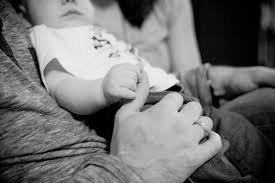

Besszer Mónika

laktációs (szoptatási) szaktanácsadó (IBCLC)
perinatális (szülés körüli) szaktanácsadó
babamasszázs oktató
ICST (kranioszakrális specialista)
Telefon: +36-30/418-3250 | E-mail


Családi bölcső program
Már a várandósság elejétől sok-sok kérdés vetőtik fel Benned? Rengeteg ellentmondásos információval találkozol akár a környezetedben, akár az internet világában?
A szülésre, szülőségre felkészítésre azért van szükség, hogy az anya és kísérője a szülés során ne sodródjanak az eseményekkel, hanem tudatosan vághassanak bele ebbe az izgalmas folyamatba. Szülést tervezni nehéz, hiszen számtalan helyzet és körülmény sodorhatja az eseményeket a megtervezettől eltérő mederbe.
A szülésfelkészítés segít abban, hogy ne az ismeretlenbe lépjenek be a gyermeket váró párok, mely a bizonytalanság érzését okozza, hanem naprakész, tudományos alapokon nyugvó elméleti és gyakorlati tudást kapjanak. A szülés nem egyszerűen egy fiziológiás testi történés, hanem teljes átalakulást hoz a pár életében.
Ezért fontosnak tartom, hogy a felkészülésben ne csak a szülőszobai eseményekre koncentráljon az édesanya, hanem a várandósság egészére, a babával való kapcsolatfelvételre, a kisbabáját szoptató és ellátó édesanya mindennapjaira és az ehhez nélkülözhetetlen családi támogatásra.
Kiemelten fontosnak tartom az igény szerinti szoptatás tudományos hátterének gyakorlati megismertetését, és az ehhez illeszkedő válaszkész gondoskodás és gondozás alapjainak átadását. Hasznosnak tartom a szülésre felkészítést azoknál a pároknál is, ahol az előző szülés valamilyen oknál fogva császármetszéssel végződött, és rossz élményként (traumatikusnak) élték meg azt.
A várandósok szoptatásra és babagondozásra felkészítése:
Miért fontos a szoptatás? Hogyan fogjunk hozzá? Mit vegyenek meg a babájuk számára? Az első napok kihívásai a kórházban, majd otthon. Mit ehet a szoptató édesanya? Szabad vagy nem szabad (betegségek, beavatkozások lehetőségei a szoptatás alatt)? Az apa szerepe a családban.
Gyakorlati útmutatás: babagondozás, fürdetés, öltöztetés, szoptatási testhelyzetek...
